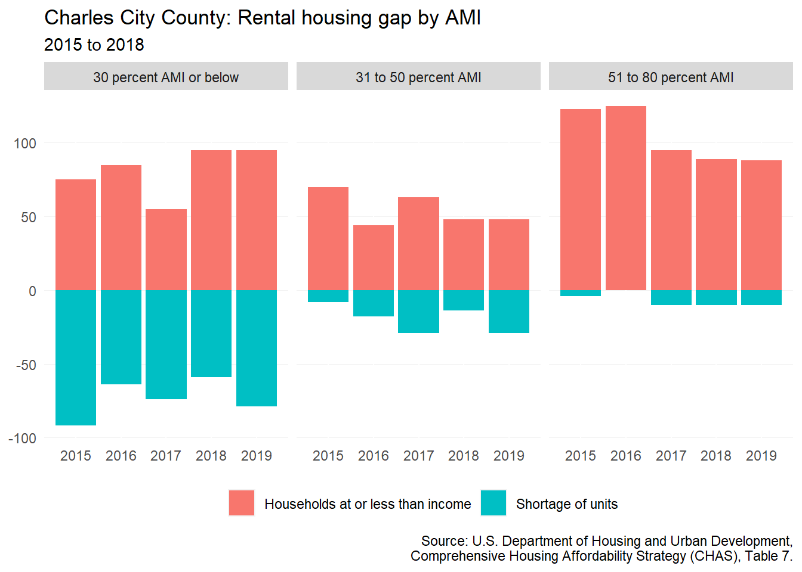
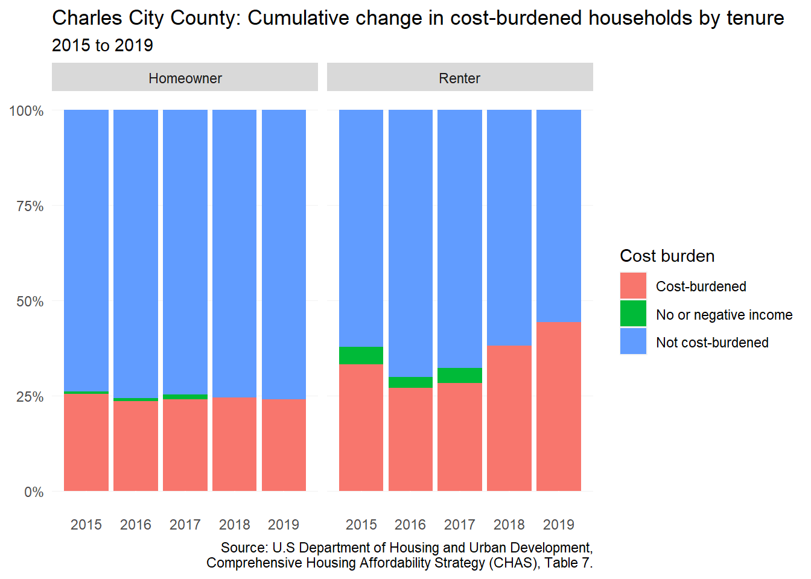

16 Charles City County
This chapter is a summary of the major changes to the Charles City County’s population and housing market in the past five years.
16.1 Takeaways
- Population decline in the last decade in Charles City County has largely been the result of natural decreases.
- Although there are fewer renters in the county than there were in 2016, affordability challenges remain.
- Median renter income has decreased by 22 percent between 2016 and 2020, while the income needed to afford the median home price has only increased.
- There is now a nearly $17,000 gap between the typical renter household income and the income needed to afford the typical home price.
16.2 Demographic and socioeconomic changes
16.2.1 Population changes
In Charles City, population has been decreasing between 2010 and 2020 — going from 7,256 to 6,773, a loss of 483 residents. These changes reflect a trend among many Virginia rural localities as job opportunities leave and fewer and fewer adults have children.
The components of population change for Charles City County showed that, in 2016 and 2017, people were moving to the county from other parts of the state or country. But natural decreases have consistently outpaced any and all growth within the county until 2021, when domestic migration joined natural decreases in contributing to the county’s population loss.
16.2.2 Household characteristics
The changes in household types in Charles City County have been only a fraction of the overall population. But from 2016 to 2020, there has been an overall decrease in households with children in the county — both among homeowners and renters (-48). The only major increaes has been among nonfamily homeowner households (+146). This is most likely attributable to an increasing number of seniors living alone.

The senior population in the county increased by 251 between 2016 and 2020. Much of that growth occurred among seniors who were the head of their family household (+130), followed by seniors living alone (+49).
16.2.3 Income and wages
For homeowners in the county, there has been very little change in median household income. When adjusted for inflation, homeowner median household income has only increased by 2 percent — from $65,077 in 2016 to $66,719 in 2020.
Renters in the county have seen a decrease in median household income by 22 percent — falling nearly $10,000 to $33,661 in 2020.
16.2.4 Persons with disabilities
Individuals with independent living difficulties have increased largely among the 65 year and older age group. In total, there has been an increase of 67 individuals with independent living difficulties at this age between 2016 and 2020. Although this may seem like a small portion of the population, these individuals will increasingly require home aide assistance, accessibility modifcations, or an assisted living facility.
16.3 Housing supply and market changes
16.3.1 Homeownership
From 2017 to June 2022, median home price in the county has been on a general increase. In January 2017 the median home price was $142,000 and by July 2022 was $200,000. Between this time, monthly median sales price have fluctuated seasonally. But home sales in the county have not typically numbered beyond ten closed sales during this time frame. In fact, it was only in August 2019 that Charles City County so a five year high of ten total sales. With low sales and lower median prices, the loss of population is generally reflected in the for-sale home market.
16.3.2 Rental
Less than one in five households in the county are renters as of 2020 (15.6 percent). From 2016 to 2020, renter households have been declining in the county — going from 504 in 2016 to 467 in 2020. With few multifamily properties in the county, there is no doubt a large number of renters who are renting single-family homes across the county.
The rental market in Charles City County is small to non-existent. Apartments.com shows no available rental listings in the county, although CoStar lists at least one multifamily property in the county, Sign Post Estates. This 36 unit apartment complex was built in 1992 utilizing USDA Rural Rental Housing Loans and then utilized 9% Competitive Low-Income Housing Tax Credit program in 2004.
16.4 Gap analysis
16.4.1 Affordability of current housing stock
For the few hundred renters in the county, reaching homeownership has becoming more and more difficult in the county. In 2016, the income needed to afford the median home price was $34,539, while the median renter household income was $40,152. Since 2016, the ability of a renter to afford homeownership has quickly slipped away. By 2017, the median renter household was a few thousand dollars short of being able to afford homeownership. And by 2020, the gap between renter income and income needed had grown to nearly $17,000.
In spite of the low number of renters in the county, there is still a shortage of affordable rentals for households making less than 80 percent AMI. That shortage has shrunk since 2015, from 104 rental units to 83 in 2018. With the county’s declining population, a likely explanation is the departure of lower income renter households to other parts of the region.

16.4.2 Impact of housing costs
From 2015 to 2019, there has been little change in the percent of households experiencing cost burden. Although there has been a slight decline in the number of cost-burdened homeowners, the share of cost-burdened homeowners has remained largely unchanged (24 percent in 2019). For renters, the number of cost-burdened renters has increased to 44 percent.

McKinney-Vento Act data provides an estimate of enrolled students who are experiencing homelessness. This data is contrast to HUD Point-in-Time (PIT) counts because it utilizes a different definition of homelessness. In Charles City County, the number of enrolled students has remained below 30 from the 2016-2017 to 2019-2020 school years. During the 2018-2019 school year, Charles City County had a lower count of 16, but experiences a slight increase to 22 in 2019-2020.